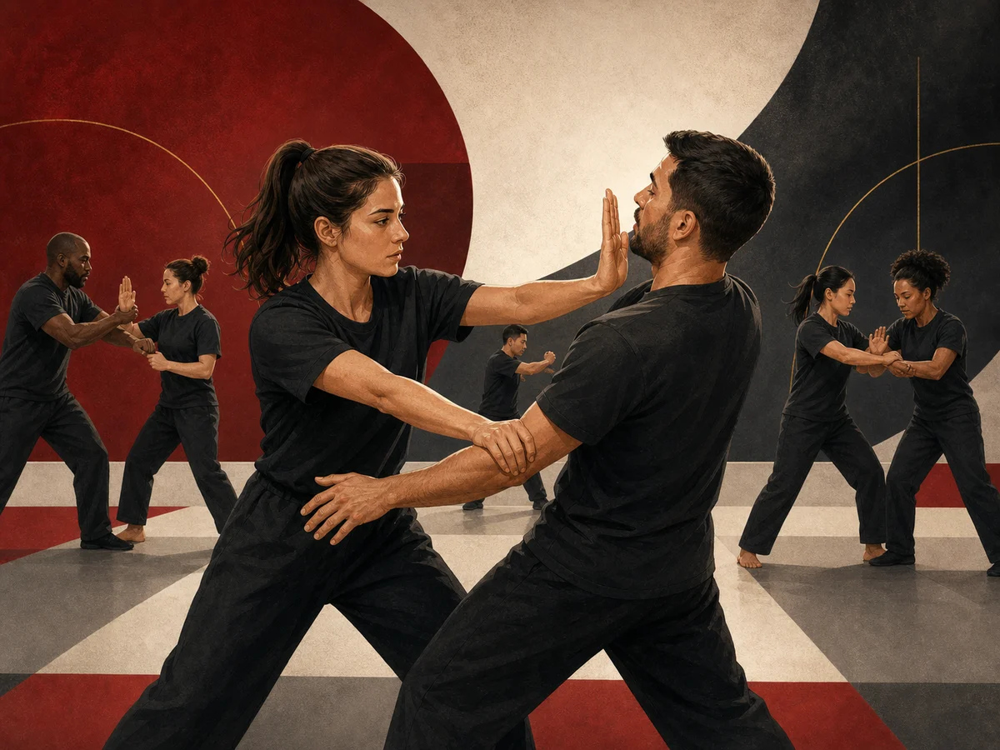

Définition
Le site officiel rattache la self-défense à la défense personnelle, au combat rapproché et aux stratégies de protection.
Pratique représentée
La page officielle WUKF France présente la self-défense comme un ensemble de techniques et de stratégies visant à se protéger contre une agression physique.
Voir la source officielle
Le site officiel rattache la self-défense à la défense personnelle, au combat rapproché et aux stratégies de protection.
La page officielle mentionne notamment Self Defense-Combat-Secours et Goshin Do, avec plusieurs rubriques indiquées comme encore en cours.